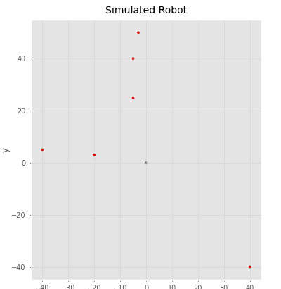
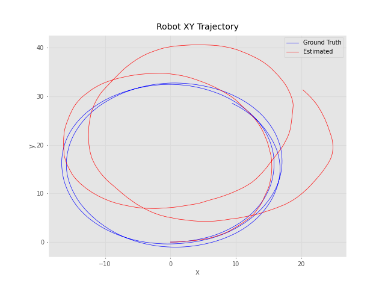
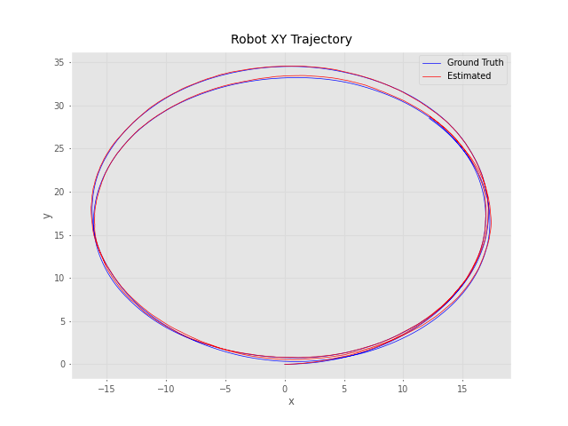
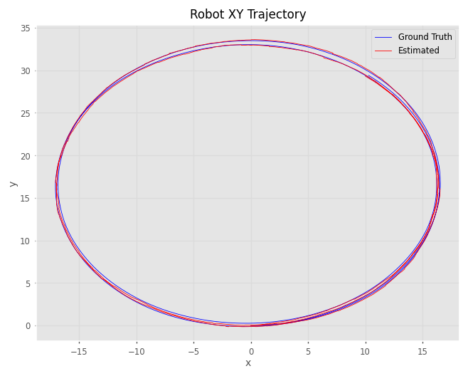
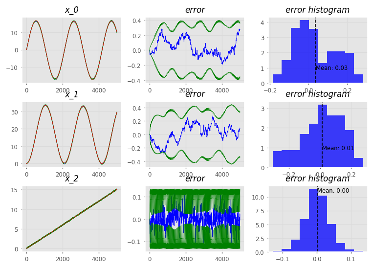
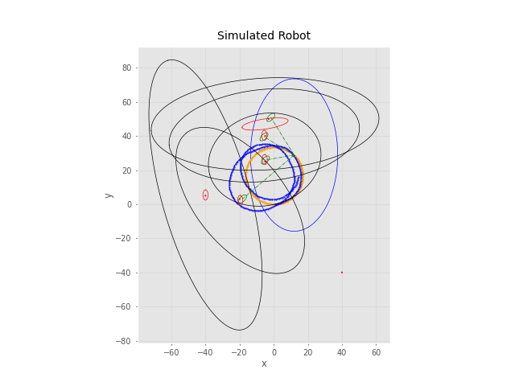
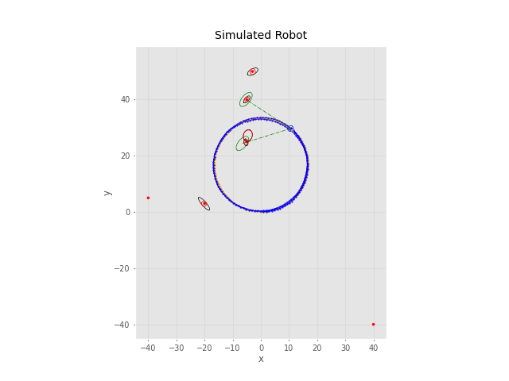
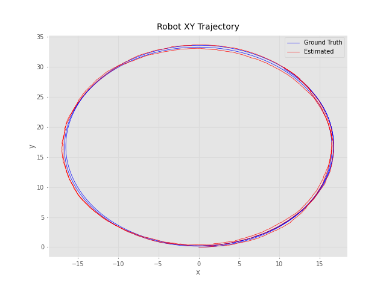
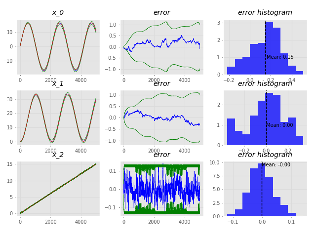

A Python implementation of Feature-based Extended Kalman Filter (FEKF)
localization and SLAM for a simulated 3-DOF differential-drive robot, built on the PRPY
probabilistic robot localization library. The project has three steps, each building on the
previous one:
EKF localization with dead reckoning + compass. Wheel-encoder odometry drives the motion model, and compass (yaw) readings update the filter.
Feature EKF map-based localization. The robot knows a map of 2D point features, matches its observations to the map with ICNN data association, and uses them to correct its pose.
Feature EKF SLAM. The map starts empty. Unmatched observations are added to the state vector as new features, so the robot builds the map and localizes itself at the same time.

Live map-based localization run. Blue: estimated trajectory and feature observations; black: expected observations of the map features
Algorithm
On each step, the filter runs:
Prediction with the compounding operator $\oplus$: $\bar x_k = x_{k-1} \oplus (u_k + w_k)$ and $\bar P_k = A_k P_{k-1} A_k^T + W_k Q_k W_k^T$.
Data association (ICNN). Each observation is paired with the nearest map feature by squared Mahalanobis distance
$$ D^2_{ij} = (z_i - h_j)^T (P_{h_j} + R_i)^{-1} (z_i - h_j), $$
and the pairing is accepted only if it passes the individual-compatibility test $D^2_{ij} < \chi^2_{d,\alpha}$.
Update. Paired features are stacked with the compass reading and a standard EKF update is applied (the Joseph form is also implemented).
State augmentation (SLAM only). Each unpaired observation becomes a new feature $x_{F_{new}} = x_B \boxplus z_{F_i}$, and the covariance grows through the Jacobians of $\boxplus$, keeping the robot-feature cross-correlations.
The concrete filters are put together with multiple inheritance (observation model +
localization method + motion model), so Cartesian or polar features and displacement or
constant-velocity motion models can be swapped freely.
EKF with Compass Updates

No compass: pure dead reckoning, the estimate drifts away

10 Hz compass: heading is locked and the trajectory almost matches the ground truth
Even with a fast compass, the x/y covariance keeps growing, because the compass does not
observe position. That is what the feature updates fix.
Map-Based Localization

XY trajectory: ground truth vs. estimate

State errors stay within ±0.3 m and inside the ±3σ bounds
With feature updates, the full pose becomes observable. The uncertainty stays bounded and
shrinks each time features are observed, instead of growing without limit as in dead
reckoning.
Feature EKF SLAM

No feature observations: the estimate drifts and the uncertainty grows to tens of metres

Observations every 20 steps: mapped features (red) converge on the true landmarks

The estimated trajectory overlaps the ground truth

Errors remain inside the ±3σ bounds, so the filter stays consistent
Features within the 50 m sensor range are initialized and then re-observed on every lap. The
robot-feature correlations let each re-observation correct the robot pose and the map
together. Observing more often gives tighter bounds on both the robot and the features.